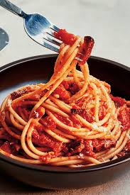

Amatriciana

Home
Amatriciana sauce, known in Italian as amatriciana (matriciana in Romanesco dialect),[2] is a sauce made with tomatoes, guanciale (cured pork cheek), pecorino romano cheese, black pepper, extra virgin olive oil, dry white wine, and salt.
Originating in the comune (municipality) of Amatrice (in the mountainous province of Rieti of the Lazio region), the amatriciana is one of the best known pasta sauces in present-day Roman and Italian cuisine. The Italian government has named it a prodotto agroalimentare tradizionale (PAT) of Lazio, and amatriciana tradizionale is registered as a traditional speciality guaranteed (TSG) in the EU and the UK.[3]
ingredients
- spaghetti
- oil
- guanciale
- tomato sauce
- pecorino romano
- black pepper
Steps
- In a large skillet, heat olive oil over medium-high heat until shimmering. Add guanciale and pepper flakes and cook, stirring, until lightly browned, about 5 minutes. Add wine and cook, scraping up any browned bits on bottom of pan, until nearly evaporated, about 3 minutes.
- Add tomatoes and bring to a simmer. Season with salt and pepper.
- Meanwhile, boil pasta in salted water until just shy of al dente, about 1 minute less than package recommends. Using tongs, transfer pasta to sauce, along with 1/4 cup pasta cooking water. Cook over high heat, stirring and tossing rapidly, until pasta is al dente and sauce has thickened and begins to coat noodles. Remove from heat, add cheese, and stir rapidly to incorporate. Season to taste with more salt and pepper. Serve right away, passing more cheese at the table.